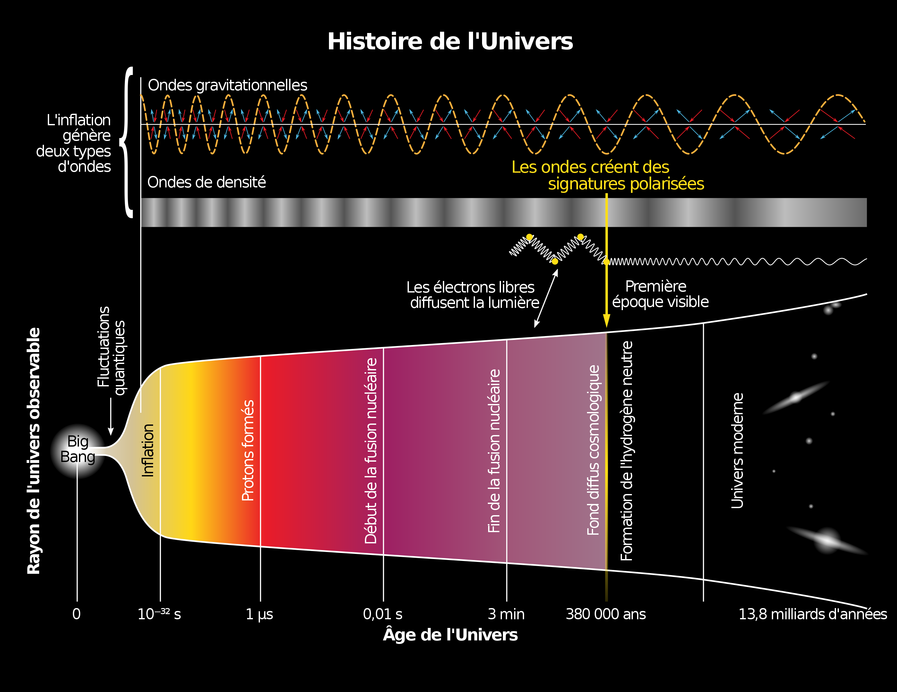

BIG BANG

What is the Big Bang Theory?

The Big Bang Theory is the leading explanation for how the universe began. Simply put,
it says the universe as we know it started with an infinitely hot and dense single point
that inflated and stretched — first at unimaginable speeds, and then at a more measurable
rate — over the next 13.8 billion years to the still-expanding cosmos that we know today.
Existing technology doesn't yet allow astronomers to literally peer back at the universe's
birth, much of what we understand about the Big Bang comes from mathematical formulas and
models. Astronomers can, however, see the "echo" of the expansion through a phenomenon known
as the cosmic microwave background.
While the majority of the astronomical community accepts the theory, there are some theorists
who have alternative explanations besides the Big Bang — such as eternal inflation or an
oscillating universe.
The Big Bang: the birth of the universe
Around 13.7 billion years ago, everything in the entire universe was condensed in an infinitesimally
small singularity, a point of infinite denseness and heat.
Suddenly, an explosive expansion began, ballooning our universe outwards faster than the speed
of light. This was a period of cosmic inflation that lasted mere fractions of a second — about
10^-32 of a second, according to physicist Alan Guth’s 1980 theory that changed the way we
think about the Big Bang forever.
When cosmic inflation came to a sudden and still-mysterious end, the more classic descriptions
of the Big Bang took hold. A flood of matter and radiation, known as “reheating,” began
populating our universe with the stuff we know today: particles, atoms, the stuff that would
become stars and galaxies and so on.
This all happened within just the first second after the universe began, when the temperature
of everything was still insanely hot, at about 10 billion degrees Fahrenheit (5.5 billion Celsius)
, according to NASA. The cosmos now contained a vast array of fundamental particles such as
neutrons, electrons and protons — the raw materials that would become the building blocks for
everything that exists today.
The Age of Uneverse
The CMB has been observed by many researchers now and with many spacecraft missions. One of the
most famous space-faring missions to do so was NASA's Cosmic Background Explorer (COBE)
satellite, which mapped the sky in the 1990s.
Several other missions have followed in COBE's footsteps, such as the BOOMERanG experiment
(Balloon Observations of Millimetric Extragalactic Radiation and Geophysics), NASA's Wilkinson
Microwave Anisotropy Probe (WMAP) and the European Space Agency's Planck satellite.
Planck's observations, first released in 2013, mapped the CMB in unprecedented detail and
revealed that the universe was older than previously thought: 13.82 billion years old, rather
than 13.7 billion years old. The research observatory's mission is ongoing and new maps of
the CMB are released periodically.
The maps give rise to new mysteries, however, such as why the Southern Hemisphere appears
slightly redder (warmer) than the Northern Hemisphere. The Big Bang Theory says that the
CMB would be mostly the same, no matter where you look.